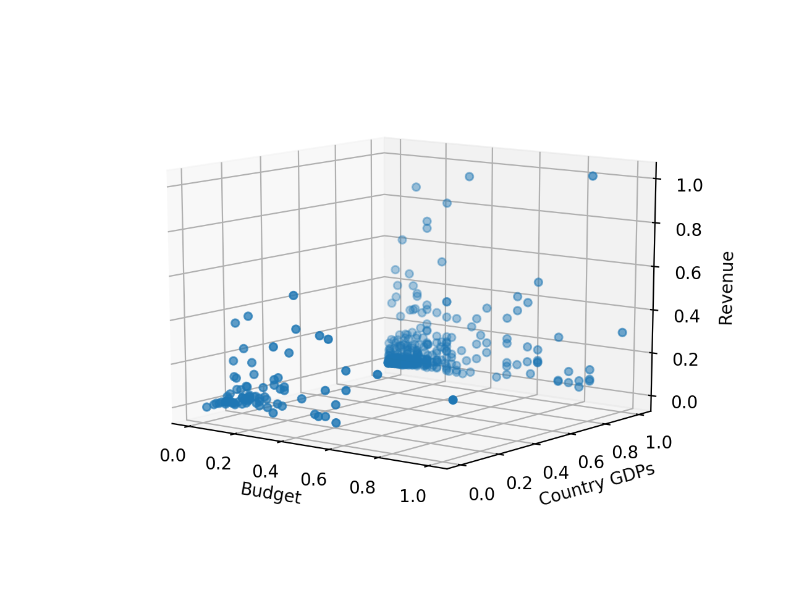
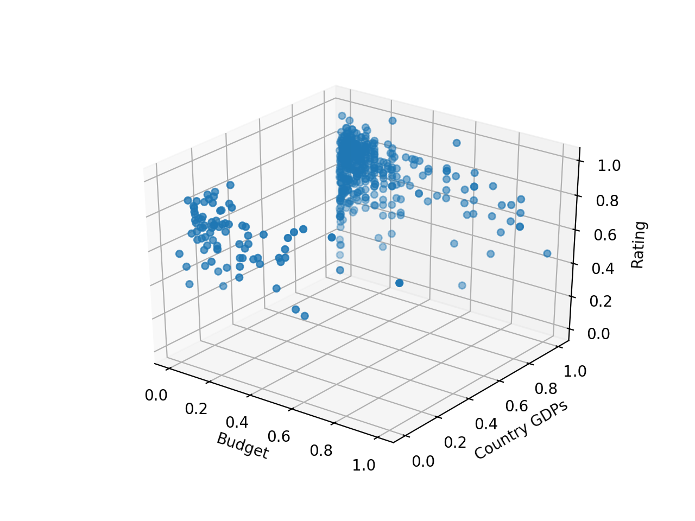

Hypothesis : Budget and GDP of the country a movie was produced in are positively
correlated with revenue, but not correlated with rating. We decided on this hypothesis because
we believed that movies originating in high GDP countries with higher production budgets would
have a population more likely to frequent movie theaters, thus raising revenue. Conversely, we thought that rating would
not have a strong correlation, negative or positive, because rating is more based on the qualitative
features and content of a movie, which are not reflected through GDP or budget.
We used multiple linear regression to investigate the relationships of budget and GDP vs revenue
as well as budget and GDP vs ratings. We decided on a multiple regression model as opposed to simple
linear regression because we wanted to examine the effect of the combination of budget and GDP on our
dependent variables instead of one at a time. We measured our "success" by the r-squared value. If our hypothesis
were correct, we would anticipate that regression with revenue would lead to a positive, greater r-squared value.
On the other hand, we would then anticipate that regression with rating would lead to a r-squared value closer to 0.
We found that the sources we gathered data from had many NULL or 0 values for revenue and budget. Therefore, we had to re-scrape our data
to only include nonzero data points. We also struggled
with plotting the data at first because of the numerical range of the different variables. For example, rating ranges from 1 to 10
while budget went up to the millions. In order to counteract this, we normalized all of the independent and dependent variables
to a scale of 0 - 1.
Multiple regression with revenue as the dependent variable generated an r-squared value of 0.13023633515436595.
The p value for the independent variable budget rounded to 0.000, making it strongly significant, while the p value
for GDP was 0.754, making it not significant.
Multiple regression with rating as the dependent variable generated an r-squared value of 0.004510089294533781.
The p value for the independent variable budget rounded to 0.471, making it not significant, while the p value
for GDP was 0.197, making it not significant as well.
Comparably, revenue was more strongly correlated to our independent variables than rating. Also, the p value for budget
when regressing on revenue rounded to 0.000, which implies a strong significance that helps confirm our hypothesis. Although
the r-squared value for revenue is not objectively very high, it is positive and the presence of a statistically significant
independent variable leads us to believe our hypothesis was not unfounded. Additionally, the extremely low r-squared value for
the regression on ratings as well as the non-significant p values for both of the independent variables support our claim
that there is no correlation between budget and GDP vs rating.
Although the p values for GDP in both regressions were not significant, there could be confounding factors that would have influenced
the result - this will be elaborated on in a later section.
We generated two 3D scatter plots, where the x axis was budget, y axis was GDP, and the z axis
was either ratings or revenue. We did this to simultaneously see the relationship between budget and the
dependent variable as well as between GDP and the dependent variable. Below are our two scatter plots:
Figure 1 : Budget and GDP vs Revenue

Figure 2 : Budget and GDP vs Rating

We found that the country of origin for the vast majority of our movies was the US. We had over 500 data points total,
but some countries only appeared once or twice. Moreover, the US has an unusually high GDP compared to all of the other
countries in the data. This may contribute to why the p value for GDP was not significant for both regressions. It also caused
a strong skew in the data. Although we tried to mitigate this by normalizing the values, our data was most likely still affected
by this value-wise and distribution-wise gap in the data. Since we got rid of all the data points that were missing the values we
needed, this also reduced the population of our data. Inherently, our data might have a bias stemming from this inevitable data cleaning
process.
Moving forward, we may swap out our GDP independent variable with a different value because we suspect it may be a confounding variable.
Since we have already established this system of testing and analysis, we feel it would be easy to test against a wide range of variables.